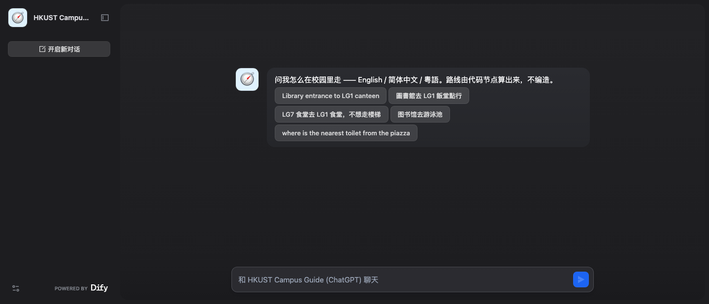

AISC1000A (LA12), Group 16. Campus guide: a wayfinding chat for HKUST newcomers.
Everything below can be checked against the repository at https://github.com/FreeFish0904/freefish-campus-guide. Where a number appears, the command that produces it is not far away.
HKUST is hard to walk around, and the hard part is rarely which building. It is the last twenty metres: the Academic Building runs from LG7 to 4F, the lifts do not all serve the same floors, the library has no door at ground level, and the walkway between them exists only on LG1. The newcomer guide explains all of it, and so do the signs, but the signs are on the floor you are already standing on.
The app is for a first-year or exchange student in week one and for open-day visitors: someone with a phone who cannot always name the building they are standing in. It is also for a student who cannot use stairs, for whom a route with a flight in it is the wrong route, not a slower one.
One sentence in English, 中文 or 粵語, typos included, comes back as a route with a time, a distance, the floors and the lifts. That works when every number can be recomputed from the published map, step-free never returns a stair, the browser and the Dify chat agree word for word, and routes still answer with the model deleted.
That last test answers CILO 3 and 4. The engine owns the numbers, because a number can be checked against a graph. The model owns one sentence, all that is left when the rules fail. The team owns the data, the accessibility default and the release, which are judgements no test can invent.
The links in section 5 point at one Dify Chatflow with six nodes, imported from dist/hkust-guide-chatgpt.dsl.yml. Start passes the question to a Code node that carries the whole engine, around 78,000 characters of JavaScript bundled from the same files the browser loads, which is the reason the two front ends cannot drift apart. An If/Else node then looks at what kind of answer came back. If the engine recognised the question, an answer node prints its text unchanged. If it did not, the LLM writes a short reply from the clarification and a second answer node returns that.
| node | type | what the file sets |
|---|---|---|
| 开始 start | Start | one variable in use: sys.query |
| 引擎 engine | Code (JavaScript) | input query = {{#sys.query#}}; body is dist/dify-code-node.js, 77,922 characters; outputs exactly text, kind, ok |
| 规则命中了吗 rules | If/Else | case true: [9000000000002, kind] is not clarify |
| 路线 route | Answer | {{#9000000000002.text#}}, the engine text printed verbatim |
| 前台 front desk | LLM | openai / gpt-5.6-sol, temperature 0, max_tokens 240, memory window off, context off, vision off |
| 兜底 reply | Answer | {{#9000000000005.text#}} |
The published app runs on openai / gpt-5.6-sol at temperature 0 and 240 tokens, with memory off, context off, vision off, no knowledge base attached and no tool the model can call. App level it is an advanced chat: no conversation variables, retriever resources disabled, file upload off, speech in and out off, sensitive word avoidance off.
There is a second file, dist/hkust-guide.dsl.yml, which is the same flow with the LLM node, the fallback answer and the if/else deleted. Three nodes, and every route still answers. We kept it because the claim that the model is optional is easy to write and hard to believe without something that runs.
Figure 1. The flow as imported, drawn from the DSL file rather than captured from the console: six nodes, the branch on kind, and a note on what the model can see.
Our first import into Dify died before anyone could ask it a question. A Code node declares its outputs, and Dify compares the number of keys the code returns with the number declared; CodeNode._transform_result ends with
if len(parameters_validated) != len(result):
raise CodeNodeError("Not all output parameters are validated.")The engine knows more than the flow needs, since it also computes seconds, the step list, the lifts used and the origin id. The first version of main() returned the whole answer object, which is 21 keys on a route and 23 on a nearest-place answer, and the node refused it. Declaring three outputs and returning exactly those three, text, kind and ok, was the whole fix, and the rest of what the engine computes stays inside the node. If whoever imports this next year gets an error on the first run, that is usually the reason.
A Dify app with a chat window usually has a document library behind it. This one does not. There is no vector store and no embedding model; the knowledge base is a single hand-written file, src/data/campus.ust.js, which builds a graph from a spec of buildings, floors, rooms and connections.
We chose that because the answer is arithmetic rather than a passage. “3 min 12 s · 260 m · no lift” cannot be retrieved from anything; it comes out of a shortest path over edges that carry a length, a floor and a kind. A passage retriever could hand back the paragraph about LG1 canteen, but it could not promise that the path implied by that paragraph has no stairs in it, and for the reader who asked for step-free that promise is the answer.
| source | what it gave us |
|---|---|
data/ust-newcomer.txt | the newcomer guide this prototype is built around: LG1 canteen, LG5 McDonald’s, LG7 canteen, the G/F 24-hour study area, the library’s top-floor sea-view seats, the LSK canteen and study room, the CYT Bloomberg terminals, the E2 computer room, the pool, ParknShop and the G/F bookstore |
| https://www.hkust.edu.hk/visit | minibus 11 and 11M, bus 91, 91M, 792M and 104, the southern entrance as the drop-off |
| https://library.hkust.edu.hk | Learning Commons, group study rooms, nap pods, 3D printing, the print and copy station |
What is in the graph is 10 buildings, 64 places, 9 levels (LG7 to 4F), 240 nodes and 291 edges. That is a slice of the campus rather than the campus: food, study space, transport, admin and a few facilities, which is what someone needs in their first week. The app never suggests it knows more than that, and “I cannot find X in this campus map” is a real answer it gives.
Building it took four passes. Places became nodes with a building, a floor, a position, a category and a name in three languages plus aliases. Connections became typed edges, corridor, stairs, lift, covered walkway and open-air link, each drawn inside its building footprint, with lift cores joining every pair of floors they actually serve. Names went through alias tables in EN, 中文 and 粵語 and a traditional to simplified fold applied to both the input and the keywords, plus patterns for room codes and “building plus floor”. And doubt got written down rather than smoothed out, which is the fourth pass and the least comfortable one: 37 of the 64 places and 10 of the 19 cores carry verified: false (those ten cores are every lift in the slice), the header counts 47, and the footer says what 未核实 means.
Answering a question is not cosine similarity either. A word index matches names and aliases, then a Levenshtein pass looks at words of five letters or more, one edit allowed at five letters and two from six up. A hit is kept at 0.7 confidence, so “libary to lg 1 canteen” comes back as a route rather than a question. Then Dijkstra runs, and the steps are rendered in the language the question was asked in.
The one place a corpus would have helped is opening hours, and we left them out rather than guess. The last rule in the prompt is that the model may answer a non-routing question only if the engine’s reply already says it, and otherwise says it does not know. Hours change every term, so a corpus would need maintaining more often than the graph does.
The engine also runs outside Dify, which is how it was written. index.html loads src/ directly, the floor plan is inline SVG and the route is drawn on top of it, and both front ends answer from the same bundled code. That is why a disagreement between them would be a real bug and not a rounding difference, and why check_bundle refuses to let dist/ drift.

Figure 2. The browser app on sample question 1: 3 min 12 s, 260 m, step-free, three steps, and the LG1 plan with the route drawn.
Three console captures that belong with 2.1 are still missing, because they need the cloud.dify.ai login: the canvas, the Code node panel and the LLM node panel. docs/screenshots/ has a README saying what has to be visible in each, down to the engine hash, so whoever holds the account can take them in a couple of minutes.
node tools/bundle_engine.js # rebuild dist/ from src/, prints the engine hash
node tools/make_dsl.js # regenerate both .dsl.yml files
node tests/check_bundle.js # 116: dist/ is fresh, sandbox-safe, byte-identical
node tests/check_sandbox.js # 42: strict mode, no console, junk input, size limits
node tests/check_dsl.js # 204: both DSL files parse, wire up and execute| suite | what it does | result |
|---|---|---|
node tests/run_tests | 49 cases over routing, parsing, rendering and the answer contract | 641 assertions, 0 failures |
node tests/check_bundle | guards dist/ against a stale or hand-edited bundle | 116 checks, 0 failures |
node tests/check_sandbox | runs the engine in a sealed context with no console, no require, junk input and size limits | 42 checks, 0 failures |
node tests/check_dsl | parses both DSL files, checks the wiring and executes main() for each preset question | 204 checks, 0 failures |
node tests/check_graph, check_campus | the graph on both campuses: every edge inside its own building, step-free reach, the newcomer checklist | all pass |
python3 tests/browser_check.py | the interface in headless Chrome: 30 UI checks, every label on every floor, every printable character | 30 smoke, 132 and 102 renders with no collisions, 921 glyph checks |
The argument for writing all of that is the bug list in docs/TEST_LOG.md, which runs to nine entries. Three of them would have shipped. Lift waiting time was being charged per floor, so a route that climbed three floors reported 66 s instead of 30 s. The step-free filter only knew traditional characters, so 唔想行楼梯 typed in simplified was read as an ordinary request and came back with a flight in it. The map labels piled up on each other until the text was unreadable, because every label had been measured while its group was still detached from the document. The first two would have surfaced as a wrong answer; the third only surfaced in a picture.
The obvious worry with a language model in a wayfinding app is invented detail, so it is worth being exact about where each number comes from. Times, distances, floors, lift numbers and the order of the steps exist only in the router’s output, and 641 assertions compare them against exact strings. On the route branch the model is not called at all. On the other branch it receives the user’s question and the text the engine wrote, and its first rule forbids inventing a route, a distance, a floor or a walking time. Ask it “how long does it take” and no route can be built from it, so the engine returns a clarification and the model may only rephrase that.
Citation is the weaker of the three and we would rather say so. Every fact traces to one of three sources, all three listed in meta.sources, and anything we have not walked is counted in the header rather than stated flatly. The answer itself carries no passage reference, because nothing is retrieved. Provenance here is enforced when the data is written, not when the answer is generated. For a graph that is a defensible choice. It is not the same thing as citing a document, and a reader looking for footnotes will not find them.
Errors got the most attention, because they are what a user actually meets. Gibberish comes back as a clarification with examples. A missing origin gets one question and the likely places. An unknown name gets “I cannot find X in this campus map” and the nearest candidates. A typo still gets a route: “libary to lg 1 canteen” resolves to Library Entrance, and the browser prints which word it read. If the model is unavailable or the account runs out of credit, routes keep working, because they never go through it. A wrong key count fails the node loudly instead of returning half an answer, which is the failure that taught us to write 2.2.
Q: Library entrance to LG1 canteen
A: Library Entrance → LG1 Canteen (Maxim's)
3 min 12 s · 260 m on foot · no lift · Step-free
1. Walk 45 m along the Lee Shau Kee Library LG1 corridor
2. Follow the covered walkway to Academic Building (60 m)
3. Walk 155 m along the Academic Building LG1 corridor, past ATM
✓ You have arrived at LG1 Canteen (Maxim's)| check | status |
|---|---|
| The Dify app answers, and the answer matches the local build word for word | pass on the first two suggested questions |
| A route never contains a stair the user did not allow | pass, enforced by the edge filter |
| Step-free is on by default, and asking for a lift route never removes a lift because the walk looks long | pass |
| An unknown word, a missing origin or gibberish produces a question, not a guessed route | pass, four cases in the suite |
| An unreachable pair says so and admits uncertainty | pass |
| The data names its three sources, and anything we have not walked is marked | pass: meta.sources, and a header badge counting 47 to verify |
| The same question twice gives the same text | pass, on each of the six suites in 3.1 |
| One hand-written data file rebuilds every artefact, hash printed | pass, a2762b3892aa |
Walking the campus. Nothing here replaces a person standing in a corridor checking that the edge exists, and 47 unverified items is our own count of that gap. A timed study with someone who does not know the campus, since no usability session has run. The cloud model’s behaviour under load, because we have tested it for a day rather than a semester. And the console captures in 2.1.
The honest summary is that the routing logic is tested far more thoroughly than it has been used. We think that is the right bias for a project where a wrong answer sends someone to the wrong end of the Academic Building, but it is a bias and it should be visible.
We started from a small observation about what goes wrong with apps like this. Someone standing in a lift lobby does not need a chatbot that sounds confident; they need a floor and a lift number they can act on, and a wrong one costs them ten minutes and some trust. The easy build is to paste the newcomer guide into a prompt and let a model answer. That demos well and fails the first time it sends someone to LG1 in Lift 2, a floor that lift does not serve, in the same confident voice it uses when it is right.
Once we had said that out loud, the split followed. Each part of the system does the work it can be held to. The engine is held to the graph: 240 nodes, 291 edges, 641 assertions recomputing the same times from the same data. The model is held to a short list of constraints we can read out loud, no route, no numbers, three sentences, temperature 0, no memory, nothing it can call. The team is held to the walk-through, which has not happened yet, which is why the header still counts 47 items to verify.
Three things we did not hand over. The data, because whether a corridor joins two buildings on LG1 is a claim about concrete, and only someone who has walked it can sign it off. The accessibility default, because whether step-free is on by default decides who the product is for, and a route with a flight in it is useless to the person who asked. Release, because saying “it works” needs a suite we can re-run and a person who reads the failure list; the workflow is a DSL file anyone can re-import, so the guard against a careless edit is the account, not the graph.
Everything else went through two questions. Can a machine decide whether the output is right without a person reading it? Can the user recover if it is wrong? When both answers were yes, the rules took the job. Reading “libary entraince” is checkable and a clarification costs one turn, so parsing is deterministic and shows its reading. When either answer was no, a person kept it. A wrong floor is not recoverable at eleven at night, so the numbers stay in code. Whether LG5 McDonald’s is open in exam week cannot be checked against our data and cannot be recovered if it is invented, so the model answers from the fixed list and is allowed to say it does not know.
Five things we would defend in a review. Numbers are computed, never generated. The model’s blast radius is one sentence, with no tools, no retrieval and no state. Every delegation carries a check that fails loudly, whether that is a stale bundle, a wrong key count or a changed route. Uncertainty is printed instead of smoothed, and a name is on the release.
None of this is free. A prompt would answer sentences our rules refuse, our route text is template prose, and with memory off a follow-up question has to name both places again. We took those costs because what this project has is that a stranger can trust the numbers, and a system that guesses in the tone it uses when it is right will lose that the first time it is wrong.

Figure 3. The published chat app: the opening message and the five sample questions.
The app opens with five suggested questions, so the first five rows below are one click each and the last is the one to type.
| ask | what should come back |
|---|---|
| Library entrance to LG1 canteen | 3 min 12 s, 260 m, no lift, step-free |
| 圖書館去 LG1 飯堂點行 | the same route, in 粵語 |
| LG7 食堂去 LG1 食堂，不想走楼梯 | 3 min 1 s, 170 m, one lift, no stairs |
| 图书馆去游泳池 | 10 min 54 s, 790 m, two lifts |
| where is the nearest toilet from the piazza | 5 min 26 s, 440 m |
| how long does it take | a question, not a number |
Sixty seconds is enough to check it. In the browser, ask “from the library entrance to the academic concourse” twice, once with step-free on and once off: 4 min 34 s with one lift, then 4 min 5 s without and up the stairs instead. Then ask the chat “how long does it take” with no places in it, and watch it refuse to invent one.
One thing to know before clicking around. The test suite runs a smaller fictional campus, 214 nodes and 300 edges, while the app and the screenshots run the real graph. A name that only exists in the fictional one, such as LT-1, is not in the graph, so the app says it cannot find it and lists the nearest candidates.
That is the whole claim. The model is not where the numbers are, and the interface says so when it does not know.
Group 16, AISC1000A (LA12). The engine in the Code node is 77,922 characters with hash a2762b3892aa, and node tools/bundle_engine.js prints the hash it builds, so the node in the flow can be checked against src/ without opening Dify at all.